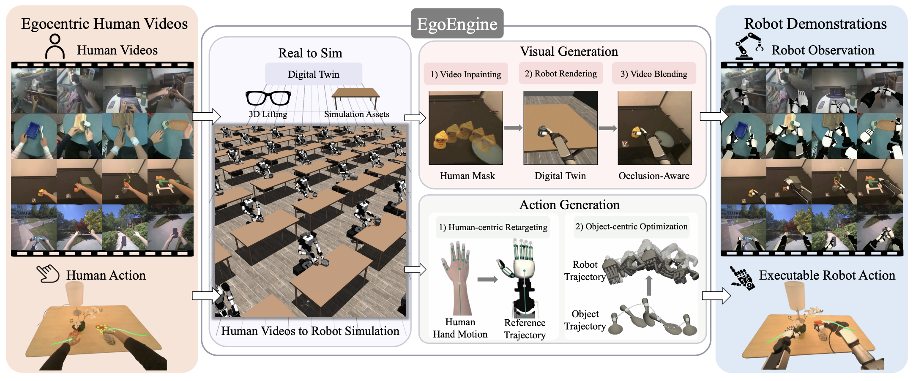
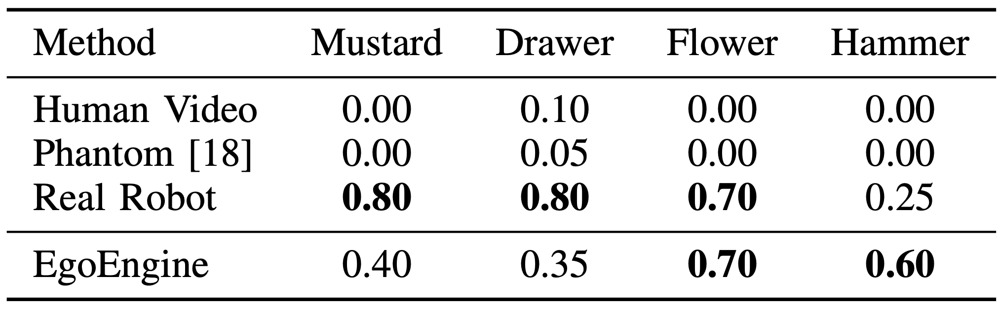
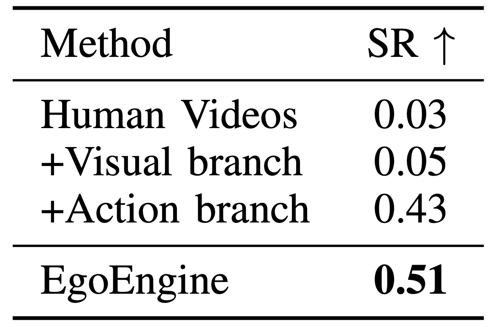

Dexterous manipulation is limited by the cost of collecting large-scale robot demonstrations. Egocentric human videos offer a scalable source of diverse manipulation behaviors, but directly using them for robot learning requires bridging two gaps: the visual gap between human and robot observations, and the action gap between human motion and robot-executable action. We propose EgoEngine, a scalable framework for transforming egocentric human manipulation videos into high-fidelity robot data. Given an egocentric RGB video, EgoEngine produces: (i) a high-fidelity robot observation video replacing human with robot while preserving scene context and temporal alignment, and (ii) a task-aligned, executable robot action trajectory under feasibility constraints. Experiments in simulation and on real robots show that EgoEngine enables scalable conversion of human videos into robot data and, to our knowledge, demonstrates the first zero-shot visuomotor dexterous policy learning from egocentric human videos without real-robot demonstrations.

EgoEngine is a Scalable data engine that converts egocentric human videos into robot demonstrations. Given an egocentric human video, EgoEngine constructs a digital twin and jointly produces (1) a high-fidelity, temporally consistent robot observation video and (2) executable action trajectories aligned with the video. The generated demonstrations serve as training data for downstream visuomotor policies, enabling Zero-shot execution.
We present qualitative results for robot observation generation, followed by dataset-scale examples from TACO and Aria.
We present executable action trajectories produced by EgoEngine on both TACO and Aria tasks.
We present real-world policy rollouts for tasks learned from EgoEngine-generated demonstrations.
Representative quantitative comparison. Additional results are provided in the paper.


@inproceedings{liu2026egoengine,
title = {EgoEngine: From Egocentric Human Videos to High-Fidelity Dexterous Robot Demonstrations},
author = {Liu, Yangcen and Cheng, Shuo and Yin, Xinchen and Shin, Woo Chul and Cueva, Alfred and Yang, Yiran and Chen, Zhenyang and Zhang, Chuye and Xu, Danfei},
booktitle = {Conference on Robot Learning},
year = {2026},
url = {https://arxiv.org/abs/2606.12604}
}